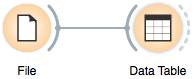

This is documentation for Orange 2.7. For the latest documentation, see Orange 3.
Loading your Data¶
Orange comes with its own its own data format, but can also handle standard comma or tab delimited data files. The input data set would usually be a table, with data instances (samples) in rows and data attributes in columns. Data attributes can be of different types (continuous, discrete, and strings) and kinds (input variables, meta attributes, and a class). Data attribute type and kind can be provided in the data table header and can be changed later, after reading the data, with several specialized widgets, like Select Attributes.
In a Nutshell¶
- Orange can import any comma or tab-delimited data file. Use File widget and then, if needed, select class and meta attributes in Select Attributes widget.
- To specify the domain and the type of the attribute, attribute names can be preceded with a label followed by a hash. Use c for a class and m for meta attribute, i to ignore a column, and C, D, S to continuous, discrete and string attribute type. Examples: C#mpg, mS#name, i#dummy. Make sure to set Import Options in File widget and set the header to Orange simplified header.
- Orange’s native format is a tab-delimited text file with three header rows. The first row contains attribute names, the second the domain (continuous, discrete or string), and the third optional type (class, meta or string).
Data from Excel¶
Say we have the data (sample.xlsx) in some popular spreadsheet application, like Excel:
{kind=link}
To move this data to Orange, we need to save the file in a tab or comma separated format. In Excel, we can use a Save As ... command from the File menu:
{kind=link}
and select Comma Separated Values (.csv) as an output format:
{kind=link}
We can now save the data in, say, a file named sample.csv.
To load the data set in Orange, we can design a simple workflow with File and Data Table widget,
{kind=link}
open the File widget (double click on its icon) and click on the file browser icon,
{kind=link}
change the file type selector to csv,
{kind=link}
locate the data file sample.csv which we have saved from Excel and open it. The File widget should now look something like this:
{kind=link}
Notice that our data contains 8 data instances (rows) and 7 data attributes (columns). We can explore the contents of this data set in the Data Table widget (double click its icon to open it):
{kind=link}
Question marks in the data table denote missing data entries. These entries correspond to empty cells in the Excel table. Rows in our example data set represent genes, with the values in the first column denoting a gene class. The second column stores gene names and the remaining columns record measurements that characterize each gene. Gene class can be used for classification. Gene name is a meta information, a label that is not relevant to any data mining algorithm but can identify a data instance in, say, visualizations like scatter plot. We need to tell Orange that these first two columns are special. One way to do this within Orange is through Select Attributes widget:
{kind=link}
Opening the Select Attributes widget reveals that in our input data file all seven column are treated as ordinary attributes (input variables), with the only distinction that the first two variables are categorical (discrete) and the other two are real-valued (continuous):
{kind=link}
To correctly reassign attribute types, drag attribute named function to a Class box, and attribute named gene to a Meta Attribute box. The Select Attributes widget should now look like this:
{kind=link}
Change of attribute types in Select Attribute widget should be confirmed by clicking the Apply button. The data from this widget is fed into Data Table widget, that now renders the class and meta attribute in a color different from those for input features:
{kind=link}
We could also define the domain for this data set in some different way. Say, we could make the data set ready for regression, and use heat 0 as a continuous class variable, keep gene function and name as meta variables, and remove heat 10 and heat 20 from the data set (making these two attributes available for type assignment, but not including them in the data on the output of Select Attributes widget):
{kind=link}
Under the above setting of attributes the rending of the data in the Data Table widget looks like the following:
{kind=link}
Header with Attribute Type Information¶
Information on attribute type may already be provided in the header of the Comma Separated Values file. Let us open the (sample.xlsx) data set in Excel again. This time, however, we will augment the names of the attributes with prefix characters expressing attribute type (class or meta attribute) and/or its domain (continuous, discrete, string), and separate them from the attribute name with a hash sign (“#”). For the type, the abbreviations are:
- c: class attribute
- m: meta attribute
- i: ignore the attribute
and abbreviations for the domain are:
- C: Continuous
- D: Discrete
- S: String
This is how the header with augmented attribute names looks like in Excel (sample-head.xlsx):
{kind=link}
We can again use a File widget to read the data from the comma-separated file exported from Excel. We have to instruct Orange to interpret annotations in attribute names. We do so by choosing Import Options ... button in the File widget, and set the Header to Orange simplified header:

Notice that the attributes that we have ignored (label “i” in the attribute name) are not present in the data set.
Native Data Format of Orange¶
Orange’s native data format is a tab-delimited text file with three header rows. The first row lists attribute names, the second row defines their domain (continuous, discrete and string, or abbreviated c, d and s), and the third row an optional type (class, meta, or ignore). Here is an example:
{kind=link}
The above screenshot is from Excel, but the file was actually saved using “Tab Delimited Text (.txt)” format. To open it in Orange, we have to rename the file such that it ends with ”.tab” extension (say from sample.txt to sample.tab). In Windows, one can bypass this step by placing the name of the file and the .tab extension in quotes when using Save As ... command (e.g., “sample.tab”).